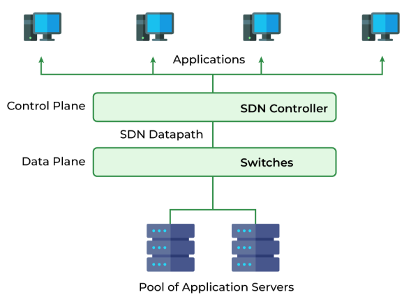
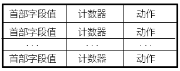
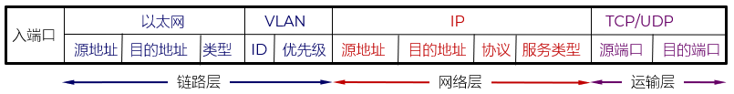
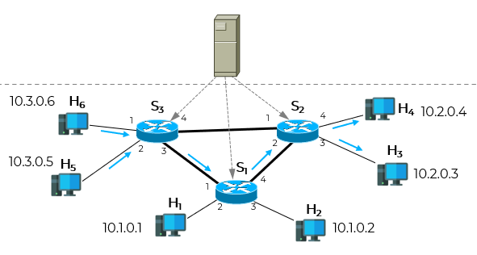
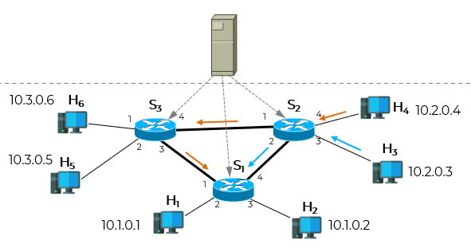

Software Defined Network
由斯坦福大学N. McKeown 于 2009 年首先提出
谷歌于 2010 ~ 2012 年的数据中心网络 B4 进行了运行验证
解决如何智能控制
交换机/路由器同时处理控制逻辑（如路由协议）和数据转发，设备独立运行，配置复杂
路由器彼此要交换信息才能获取或确定路由，进而转发
路由的确定 - 控制层面
数据的转发 - 包括最大前缀的匹配和最终的数据转发；数据层面
是一个体系结构，是一种设计、构建和管理网络的新方法或新概念
把控制层面和数据层面分离，让控制层面利用软件控制数据层面中的许多设备
路由器不再交换信息，由控制层面集中管理
路由器只做数据的转发



入端口
二层字段（L2）：源MAC地址、目的MAC地址、VLAN ID
三层字段（L3）：IP源地址、IP目的地址
四层字段（L4）：TCP源端口、TCP目的端口
转发（Output）：将数据包从指定端口发出（可为物理端口、逻辑端口如 CONTROLLER、FLOOD、ALL 等）
丢弃（Drop）：不执行任何输出动作，等效于静默丢弃数据包
复制与多播（Group Table 引用）：通过引用 Group Table 实现一对多转发（如广播、负载均衡）
首部重写（Set-Field）：修改数据包的 L2/L3/L4 字段，例如： 修改源/目的 MAC 地址 修改 VLAN ID 修改 IP 地址或端口号（用于 NAT、负载均衡等）
发送至控制器（Send to Controller）：将数据包封装为 packet-in 消息上送，常用于首次流处理或异常流量分析
其他高级动作：如设置队列（QoS）、推送/弹出 MPLS 标签、更新 TTL 等
流量工程
异常检测（如 DDoS）
资源使用评估
自动化策略调整
| 首部字段值/匹配 | 计数器 | 动作 |
| ... | ... | ... |
| ... | ... | ... |
更新对应计数器
执行动作列表
查看是否配置了 table-miss 规则（通常指向控制器）
否则默认丢弃

| 匹配 | 动作 |
|---|---|
| IP源地址 = 10.3.*.*；IP目的地址 = 10.2.*.* | 3 |
| 匹配 | 动作 |
|---|---|
| 入端口 = 1；IP源地址 = 10.3.*.*；IP目的地址 = 10.2.*.* | 4 |
| 匹配 | 动作 |
|---|---|
| IP源地址 = 10.3.*.*；IP目的地址 = 10.2.0.3 | 3 |
| IP源地址 = 10.3.*.*；IP目的地址 = 10.2.0.4 | 4 |

| 匹配 | 动作 |
|---|---|
| 入端口 = 3; IP目的地址 = 10.1.*.* | 2 |
| 入端口 = 4; IP目的地址 = 10.1.*.* | 1 |
| 匹配 | 动作 |
|---|---|
| IP源地址 = 10.3.*.*; IP目的地址 = 10.2.0.4 | 4 |
| IP源地址 = 10.3.*.*; IP目的地址 = 10.2.0.3 | 3 |